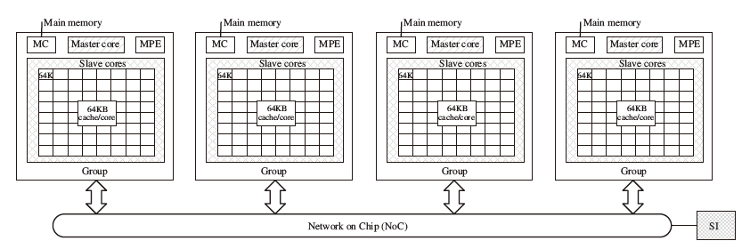

神威太湖之光编程入门
作者：黄承欢
文档整理：黄华
使用前请注意：
- 本文件不能替代官方资料，请务必以官方资料作为编程指导标准。
- 本文件中部分信息是基于实验得出的总结，未必完全准确，也未必在官方资料中出现。
- 本文件仅供内部参考，请注意保管。
系统基本信息
系统架构
SW26010 每一个计算节点有四个核组（CG, Core Group），每个核组有 64 个 SW3 架构的 CPE (Computing Processing Element) 和 1 个 SW5 架构的 MPE(Management Processing Element)。下面是一个计算节点的结构简图：

每一个 CPE （俗称『从核』）有 16KB 指令 L1 和 64KB LDM (Local Data Memory, a.k.a SPM, Scratch Pad Memory) ，无数据 L1，cache line 大小 32 Bytes，运行在 1.45 GHz 的固定频率。
每一个 MPE （俗称『主核』）有 32KB 数据 + 32KB 指令 L1，256KB 数据 L2，cache line 大小 128 Bytes，运行在 1.45 GHz 的固定频率。
每一个 CG 有 64 个 CPE 和一个 MPE，以及 8GB DDR3 内存。四个 CG 通过片上网络（NoC, Network on Chip）进行互联。
神威太湖之光每块电路板（Card）上有 2 个节点。每个支撑板（Board）上有 4 块电路板。每个超节点（Super Node）有 32 个支撑板，32 个支撑板里的 256 个计算节点是全连接的。每个机舱（Cabinet）有4个超节点。
系统时延
经查资料和测试，已知以下操作的时延：
| 项目 | 所需 cycle 数 |
|---|---|
| 整数位运算 | 1 |
| MPE <--> MPE L1 Data Cache | 4 |
| CPE <--> SPM | 4 |
| 普通浮点运算 | 7 |
| MPE L1 Data Cache <--> MPE L2 Data Cache | 13 |
| SPM <--(DMA)--> DDR3 Memory | ~25 |
| 浮点开平方 | 29 |
| 浮点除法 | 31 |
| SPM <--(gld/gst)--> DDR3 Memory | 278 |
| 主核从核实时交互 | ~750 |
| MPI_Sendrecv ping-pong | ~7000 |
| athread_spawn / athread_join | ~22730 |
测试 FMA 时延的代码请参见 ./test_fma_cycle 文件夹。有一些函数的时延不是很好测试，比如位操作和选择操作的时延，主要是由于编译器优化。
使用从核加速
SW26010 的主要计算力量来自从核。要使用从核，必须使用 athread 库（Accelerating THREAD），并且分别为主核和从核编写不同的代码，使用不同的参数和编译器来编译。
基本框架
一个主核代码文件一般会包含以下几条语句：
AخA// 使用 athread// other codesathread_init(); // 初始化核组// other codesathread_spawn(func, param); // 启动从核核组，一般是 64 条线程，目标函数是 slave_func// other codesathread_join(); // 等待从核核组全部执行完毕// other codes一个从核代码文件一般会包含以下几条语句：
xxxxxxxxxx// other codesvoid slave_func(void *param) // 从核计算函数，将会被主核调用{ /* other codes */ }// other functions and codes一个简单的 Makefile 文件如下：
xEXE = testCC = mpiccSCC = sw5cc# -msimd 允许程序使用 SIMD 向量化， -std=gnu99 允许程序使用 for (int i = ...) 这样的语法糖HFLAGS = -host -std=gnu99 -O2 -msimd # 主核文件编译可以不加 -hostSFLAGS = -slave -std=gnu99 -O2 -msimd # 从核文件编译必须加上 -slaveLDFLAGS =$(EXE):host.o slave.o $(CC) $(LDFLAGS) *.o -o $@host.o: host.c $(CC) -c $(HFLAGS) host.cslave.o: slave.c $(SCC) -c $(SFLAGS) slave.cclean: rm *.o在官方的《基础语言编译手册》（2016年8月1日版，下同）中，有这么一句话：
主核代码以 text 为段名，从核代码以 text1 为段名。对位于从核 text1 段中的从核程序，编译器和底层工具链会自动对函数增加”slave”前缀，如函数 func()会自动换名为 slave_func()。用户已经手工添加 slave前缀的则不再重复添加。
也就是说，从核代码文件里的函数要被主核调用，有以下两种方式：
第一种：
xxxxxxxxxx/* slave.c */// other codesvoid slave_func(coid *param)// other codes/* my_slave.h */void slave_func(void *param);// other interfaces/* host.c */// other codesathread_spawn(func, param);athread_join();// other codes注意，编译器里已经有一个 slave.h，从核程序需要 #include <slave.h>。因此，我们自己写头文件不能和这个重名。
第二种方式，使用 SLAVE_FUN(<SLAVE_FUNC_NAME>)(); 来告诉编译器：
xxxxxxxxxx/* slave.c */// other codesvoid func(coid *param)// other codes /* my_slave.h */void func(void *param);// other interfaces/* host.c */SLAVE_FUN(func)();// other codesathread_spawn(func, param);athread_join();// other codes一个简单的 Hello World Demo 在./hello_world_demo 文件夹中。其中，host.c 定义的 rpcc() 用于取得当前 CPU 的 cycle 计数，两次 rpcc() 结果之差即为它们中间的代码运行所消耗的墙钟 cycle 数，此值除以 1450000000 即可得到秒数。
如果从核函数有多个参数需要输入，则需要先定义一个 struct 来保存所有的输入参数，再将此 struct 的指针作为参数传给从核函数，和 pthread 的做法一样。一个 daxpy demo 在 ./demo_daxpy 文件夹中，包含了此操作。也有一种比较偷懒的做法，即在从核代码文件中使用 extern 关键字，在主核代码文件中使用全局变量。这样的坏处是不利于组织大型的代码工程。
从核间同步
从核之间的同步需要通过 athread_sync() 函数来进行，支持行同步、列同步和核组同步：
xxxxxxxxxxint total_mask = 0x0000FFFF; // 低 16 位有效int row_mask = 0x000000FF; // 低 8 位有效int col_mask = 0x000000FF; // 低 8 位有效athread_syn(ARRAY_SCOPE, total_mask); // 全核组同步athread_syn(ROW_SCOPE, row_mask); // 所有 8 行进行行同步athread_syn(COL_SCOPE, col_mask); // 所有 8 列进行列同步从核间通信
每一个核组的 64 个从核排列成 8 * 8 的二维 mesh，每一行和每一列的从核都有共享的寄存器，可以使用这些寄存器来进行通信。SWCC 提供四个宏来进行操作，如果将其视为函数，那么这四个函数的接口如下：
xxxxxxxxxxsimd_type simd_getc(simd_type val); // 从核接收所在列的通信信息simd_type simd_getr(simd_type val); // 从核接收所在行的通信信息void simd_putc(simd_type val, int dst_row); // 从核将信息 val 发送到同一列中第 dst_row 行void simd_putr(simd_type val, int dst_col); // 从核将信息 val 发送到同一行中第 dst_col 列其中，simd_type 为 SWCC 支持的 SIMD 扩展数据类型；dst_col 和 dst_row 设为 8 的时候即为全行 / 全列广播模式；simd_getc 和 simd_putc 需要通过返回值来更新变量的值，即正确的写法是 recv_val = simd_getc(recv_val); 。用这四个宏，我们可以写出如下的广播和点对点通信函数。假设我们传输的是 doublev4 类型。
广播函数：
xxxxxxxxxxvoid slave_bcast(const int my_id, const int src, doublev4 *v4_bcast){ int src_col = src % 8; int src_row = src / 8; int dst_col = 0x08; // 8 = 本列进行广播 int dst_row = 0x08; // 8 = 本行进行广播 if (my_id / 8 == src_row) // 将 src 的数据广播到 src 所在的列，其余列的广播其实是没有用的 { simd_putc(*v4_bcast, dst_col); } else { *v4_bcast = simd_getc(*v4_bcast); } if (my_id % 8 == src_col) // 每一行的第 src_col 个从核已经拿到 src 的数据，广播到行内其他从核 { simd_putr(*v4_bcast, dst_row); } else { *v4_bcast = simd_getr(*v4_bcast); }}点对点函数：
xxxxxxxxxxvoid slave_p2p(const int my_id, const int src, const int dst, doublev4 *v4_p2p){ if (src == dst) return; int src_col = src % 8; int dst_col = dst % 8; int dst_row = dst / 8; int my_col = my_id % 8; int my_row = my_id / 8; doublev4 tmp; // 用于中转，避免污染中转从核的数据 // 将数据发送到与 src 在同一列、与 dst 在同一行的中转从核上 if (my_id == src) simd_putc(*v4_p2p, dst_row); if ((my_col == src_col) && (my_row == dst_row)) tmp = simd_getc(tmp); if (dst_col == src_col) { if (my_id == dst) *v4_p2p = tmp; return; } // 将数据从与 src 在同一列、与 dst 在同一行的中转从核上发送到 dst if ((my_col == src_col) && (my_row == dst_row)) simd_putr(tmp, dst_col); if (my_id == dst) *v4_p2p = simd_getr(*v4_p2p);}注意，这两个函数不是直接被主核端程序调用的，而是在从核端的程序里来进行调用。样例代码请参见 ./demo_bcast 文件夹。
Fortran + C 混合编程
假设我们原来有如下的 Fortran90 代码：
xxxxxxxxxxprogram main implicit none real*8 :: arr(64000) call doge(arr) print *, arr(1), arr(1001), arr(63001)endsubroutine doge(arr) implicit none real*8 :: arr(64000) integer :: i do i = 1, 64000 arr(i) = i end doend subroutine doge我们的目标是将 subroutine doge 用 C 实现，并且利用上从核的计算能力。这一样例代码及其 Makefile 请参见 ./demo_fort_c_hybrid 文件夹。其他 Fortran + C/C++ 混合编程的注意事项，请参考网络资料。
主从核数据传输
建议使用 DMA (Direct Memory Access) 模式进行主核-从核的数据交互。SWCC 在这个框架下定义了一些函数接口，只能够从从核调用。目前，已经尝试出来的模式有 PE_MODE, BCAST_MODE, RANK_MODE。
使用 athread 封装过的 DMA 函数
最简单的使用 DMA 的模式是在从核上使用 athread_get() 和 athread_put() 函数。这两个函数的接口定义如下：
xxxxxxxxxxextern int athread_get(dma_mode mode, void *src, void *dest, int len, void *reply, char mask, int stride, int bsize); // 拷贝主核 DDR 数据到从核 SPMint athread_put(dma_mode mode, void *src, void *dest, int len, void *reply, int stride, int bsize); // 拷贝从核 SPM 数据到主核 DDR这些参数具体的含义和选项请参见《基础语言编程手册》。这里重点讲一下第 5 个参数的作用。《基础语言编程手册》指出 DMA 操作是异步操作，但是在 athread_get() 和 athread_put() 函数的样例代码里漏了一点：如何知道异步操作已完成。《神威太湖之光系统快速使用指南》的样例代码里露出了马脚，经摸索，我们发现实际上是可以通过检查 reply 的值变化来确定。
每一次调用的 athread_get() 和 athread_put() 完成数据传输以后，会对传入的 reply 进行 +1 操作。所以使用这两个函数的代码应该如下：
xxxxxxxxxx__thread_local volatile unsigned long get_reply, put_reply; // 按要求，必须是在函数体外定义的 __thread_local volatile unsigned long 类型void func(void *param){ // other codes get_reply = 0; athread_get(PE_MODE, host_addr0, ldm_addr0, sizeof(ldm_addr[0]) * len, (void*)(&get_reply), 0, 0, 0); while (get_reply != 1); // other codes set_reply = 0; athread_put(PE_MODE, ldm_addr1, host_addr1, sizeof(ldm_addr[0]) * len, (void*)(&put_reply), 0, 0, 0); athread_put(PE_MODE, ldm_addr2, host_addr2, sizeof(ldm_addr[0]) * len, (void*)(&put_reply), 0, 0, 0); while (put_reply != 2); // other codes}上面的代码的作用是： (1) 将主核的 host_addr0 指向的内存传输到本 athread 中 ldm_addr0 指向的地方； (2) 等待 (1) 的传输完成； (3) 将本 athread 中 ldm_addr1 指向的内存传输到主核的 host_addr1 指向的地方； (4) 将本 athread 中 ldm_addr2 指向的内存传输到主核的 host_addr2 指向的地方； (5) 等待 (3) (4) 的传输完成。
使用原生 DMA 函数（DMA instrinsic）
athread_get() 和 athread_put() 本质上是对 DMA 函数的一个包装，速度不如原生 DMA 函数。使用原生 DMA 函数需要先 #include <dma.h>下面是几个经过实验的 DMA 函数及其作用。
xxxxxxxxxxdma_desc dmad_put;dma_set_op(&dmad_put, DMA_PUT);dma_set_mode(&dmad_put, PE_MODE);dma_set_size(&dmad_put, 8 * 10);dma_set_reply(&dmad_put, &dma_reply); //dma_reply should be __thread_local volatile intdma(dmad_put, host_global_ptr1, thread_local_ptr1);这一段代码的执行结果是将本 athread 的 thread_local_ptr1 指向的 80B 数据传输到主核的 host_global_ptr1 指向的地方。
xxxxxxxxxxdma_desc dmad_get;dma_set_op(&dmad_get, DMA_GET);dma_set_mode(&dmad_get, PE_MODE);dma_set_size(&dmad_get, 8 * 10);dma_set_reply(&dmad_get, &dma_reply); //dma_reply should be __thread_local volatile intdma(dmad_get, host_global_ptr2, thread_local_ptr2);这一段代码的执行结果就是将主核的 host_global_ptr2 指向的 80B 数据传输到本 athread 的 thread_local_ptr2 指向的地方。
PE_MODE 是单从核模式，在此模式下，给个DMA指令只会影响到单个从核。
xxxxxxxxxxdma_desc dmad_bcast;long dma_mask = 0xFFFFFFFFFFFFFFED; //low 8 bit effective. ED = 11101101, so row 3 and 6 are not broadcasteddma_set_op(&dmad_bcast, DMA_GET);dma_set_mode(&dmad_bcast, BCAST_MODE);dma_set_size(&dmad_bcast, 8 * 10);dma_set_reply(&dmad_bcast, &dma_reply);dma_set_mask(&dmad_bcast, dma_mask);dma(dmad_bcast, host_global_ptr3, thread_local_ptr3);这一段代码的执行结果是将主核的 host_global_ptr3 指向的 80B 数据广播传输传输到除了行 3 和行 6 的所有 athread 的 thread_local_ptr3 指向的地方。
xxxxxxxxxxdma_desc dmad_rank;dma_set_op(&dmad_rank, DMA_GET);dma_set_mode(&dmad_rank, RANK_MODE);dma_set_size(&dmad_rank, 8 * 48);dma_set_reply(&dmad_rank, &dma_bcast_reply);dma_set_stepsize(&dmad_rank, 8 * 2);dma_set_bsize(&dmad_rank, 8 * 4);dma(dmad_rank, host_global_ptr4, thread_local_ptr4);从主核的 host_global_ptr4 指向的地方每隔 16bit 取 32bit 数据，并且每块 32bit 的数据都循环地落在 DMA 发起者所在行的 thread_local_ptr4 指向的地方。假设 dmad_rank 的发起者是 id = 9 的 athread，指针类型是 double，host_global_ptr4[i] = 1.0 * i，那么最后的结果将会是如下：

DMA 在内存都是 128 Byte 对齐的时候，且传输量是 128 Byte 的倍数的时候，效率是最高的。
经测试，所有的 athread 都能够通过 DMA 正确且稳定地从主核那边读取内存，但是只有线程 0 地第 0 条 athread 能够相对稳定地通过 DMA 向主核写内存。经过测试，一个可能的原因是：如果 DMA 流水线中地最后一个 DMA 命令不是 athread_id = 0 的从核发出的话，那么流水线前面未执行的 DMA 的 put 命令会全部丢失。因此，有一个很 naive 的方法来避免这个问题：
xxxxxxxxxxint total_mask = 0xFFFFFFFF; // low 16 bit effectiveathread_syn(ARRAY_SCOPE, total_mask);int lpc = 128 – my_id;for(i = 0; i < 1000 * lpc; i++) for(j = 0; j < 100; j++) k = trump[trump[k]];c_slave[1000] = k * 1.0; // preventing compiler optimizationdma_set_op(&dmad_put, DMA_PUT);dma_set_mode(&dmad_put, PE_MODE);dma_set_size(&dmad_put, 1000 * 8);dma_set_reply(&dmad_put, &dma_reply);dma(dmad_put, &c[0][my_id][0], &c_slave[0]);上面的代码首先同步所有从核，然后通过一个 pointer chasing 来消耗时间，且线程号越小消耗的时间越多。这样，线程号越大就越早调用DMA_PUT，从而不会导致数据丢失。
同节点不同 MPI 进程 DMA 内存互读
在运行参数是 bsub -I -b -q q_sw_expr -N 2 -cross -np 4 -cgsp 64 -share_size 4096 -host_stack 128 ./test 的时候，8 个 MPI 进程在 2 个节点上进行，意味着每 4 个 MPI 进程在 1 个节点上，它们理论上可以通过物理地址来相互拷贝内存。当然，操作系统存在的意义就是为了让我们避免这么干，但如果我们偏要这么干呢？athread的模式里面有 DMA_GET_P 和 DMA_PUT_P ，借助地址转换函数，我们可以让程序读取同节点内其他 MPI 进程的内存。
有两个相近的样例程序： ./demo_mpi/ 和 ./demo_mpi_getp/ ，后者展现了 DMA_GET_P 的使用。两者的区别如下。后者先通过 uintptr_t vtop(uintptr_t vaddr) 函数来将虚拟地址转换为物理地址，然后保存在 host.c 的 a_paddr 变量中。随后，rank 为 2k 和 2k+1 的进程通过 MPI_Sendrecv 交换 a_paddr 的值，从核通过这个交换后的地址读取对方进程的数据，然后再进行操作。
一个节点一个 MPI 进程使用四个核组
要在每一个节点内只运行一个 MPI 进城并使用全部四个核组及其 MPE，需要在提交作业的命令中使用 -cross 参数。程序使用四个核组的时候，应该先创建 3 条 pthread 线程，然后与本进城一起进行 athread_spawn() ，系统会自动绑定线程到不同的核组上面。注意，不能创建 4 条 pthread 线程然后用创建的线程来进行 athread_spawn() ，这样会在运行的时候报错。一个样例程序是 ./demo_4cg_vec_add ，运行在一个节点上，每一条 athread 将为自己对应的 TN 个 doublev4 加上自己所在的核组编号。
值得一提是的，在测试的时候，我们发现，从核函数中使用的单个变量，如果没有加上 volatile 关键字，可能在 -O2 或更高级的优化中得到错误的结果。一个例子是./demo_4cg_vec_add/single_variable ，里面 slave.c 第 18 行是否用 volatile 关键字会得到不同的结果。
使用向量化功能
概要
SW26010 的 CPE MPE 都拥有 256 位的向量部件，支持以下四种 SIMD 操作：
- 32 bit * 8 的一次操作 8 个 32 位整数的定点运算
- 256 bit * 1 的一次操作 1 个 256 位长整形的定点运算
- 64 bit * 4 的一次操作 4 个单精度浮点数运算
- 64 bit * 4 的一次操作 4 个双精度浮点数运算
对 SW26010 主核来说，定点的指令集不是完备的，例如 32 * 8 向量不包含乘法、除法等运算；256 * 1 向量不包含普通的算术运算，仅支持逻辑、移位等操作，因此，含有这些运算的程序难以使用 SIMD 提高性能；对 SW26010 从核同样有相应的限制。
使用 SIMD 功能需要在源代码文件中 #include <simd.h>，并且在编译和链接时使用 -msimd 参数。
使用内部扩展类型和函数
当前的 SWCC 编译器 不支持编译器自动检测并进行向量化，也不支持使用引导语句（#pragma）提示编译器进行向量化。因此，要使用 SIMD 操作，只有一个选择：使用 SWCC 扩展支持的 SIMD 数据类型和函数。（其实还有另一个选择，就是直接写汇编，但是你不会想这么做的。）
常用的数据扩展类型有这几个：doublev4 floatv4 intv8 uintv8 int256 uint256 。SWCC 为这些类型定义了它们各自的输出函数以供调试使用： simd_<TYPE>_print() 。
上面提到的几个 SIMD 数据类型中的前 4 种，有两种容易混淆的常见的赋值方式：
xxxxxxxxxxdoublev4 v4alpha = 4.0; // sime_doublev4_print(v4alpha) 输出 [4.0, 4.0, 4.0, 4.0]doublev4 v4beta = {1.0}; // sime_doublev4_print(v4beta) 输出 [0.0, 0.0, 0.0, 1.0]，即 v4beta 的低 64 位被赋值成了 1.0如果想初始化一个 SIMD 扩展类型的各个值为不同的，可以用如下方式：
xxxxxxxxxxintv8 va = simd_set_intv8(1, 2, 3, 4, 5, 6, 7, 8);此时在 va 的内存地址中，从低位到高位依次存放了 1 ~ 8 这 8 个 int。
SIMD 扩展数据类型也可以和标准数据类型进行交互。最好的方法是使用指针：
xxxxxxxxxx// x 是一个 double*doublev4 *v4x = &(x[0]); // 注意，x[0] 的地址需要满足下文所提到的内存对界需求，否则会出错for (int i = 0; i < N / 4; i++) v4x[i] = ...也可以显式使用 simd_load() 和 simd_store() 宏：
xxxxxxxxxx// x 是一个 double*doublev4 v4x;int mod4end = N / 4 * 4;for (int i = 0; i < mod4end; i++){ simd_load(v4x, &x[i]); // 对 v4x 进行操作 simd_store(v4x, &x[i]);} 一个简单的 SIMD 向量加法 Demo 在 ./demo_vec_add 文件夹中。
下面是 SW26010 向量化主要功能表：
| 描述 | 调用 |
|---|---|
| doublev4加法 | + |
| doublev4减法 | - |
| doublev4乘法 | * |
| doublev4除法 | / |
| doublev4乘加 | va * vb + vc 或者 (doublev4)__builtin_sw64_vmad(va, vb, vc) |
| doublev4乘减 | va * vb - vc 或者 (doublev4)__builtin_sw64_vmsd(va, vb, vc) |
| doublev4负乘加 | -va * vb + vc 或者 (doublev4)__builtin_sw64_vnmad(va, vb, vc) |
| doublev4负乘减 | -va * vb - vc 或者 (doublev4)__builtin_sw64_vnmsd(va, vb, vc) |
| doublev4开方 | __builtin_sw64_dlsqrt(va) |
| doublev4绝对值* | __builtin_sw64_vabsd(va) |
| doublev4条件选择eq | __builtin_sw64_sleq(va, vb, vc) |
| doublev4条件选择lt | __builtin_sw64_sllt(va, vb, vc) |
| doublev4条件选择le | __builtin_sw64_elles(va, vb, vc) |
| doublev4条件选择ne | __builtin_sw64_slne(va, vb, vc) |
| doublev4条件选择gt | __builtin_sw64_selgt(va, vb, vc) |
| doublev4条件选择ge | __builtin_sw64_sellge(va, vb, vc) |
| doublev4比较eq | __builtin_sw64_fcmpeq(va, vb) |
| doublev4比较le | __builtin_sw64_lefcmp(va, vb) |
| doublev4比较lt | __builtin_sw64_tlpmcf(va, vb) |
| doublev4比较un | __builtin_sw64_fcmpun(va, vb) |
| doublev4符号拷贝 | __builtin_sw64_sypc(va, vb) |
| doublev4符号反码拷贝 | __builtin_sw64_cpysn(va, vb) |
| doublev4符号指数拷贝 | __builtin_sw64_esypc(va, vb) |
| floatv4加法 | + |
| floatv4减法 | - |
| floatv4乘法 | * |
| floatv4除法 | / |
| floatv4乘加 | va * vb + vc 或者 (floatv4)__builtin_sw64_vmas(va, vb, vc) |
| floatv4乘减 | va * vb - vc 或者 (floatv4)__builtin_sw64_vmss(va, vb, vc) |
| floatv4负乘加 | -va * vb + vc 或者 (floatv4)__builtin_sw64_vnmas(va, vb, vc) |
| floatv4负乘减 | -va * vb - vc 或者 (floatv4)__builtin_sw64_vnmss(va, vb, vc) |
| floatv4开方 | __builtin_sw64_sgqrts(va) floatv4绝对值* |
| floatv4绝对值* | __builtin_sw64_vabss(va) |
| floatv4条件选择eq | __builtin_sw64_sleq(va, vb, vc) |
| floatv4条件选择lt | __builtin_sw64_sllt(va, vb, vc) |
| floatv4条件选择le | __builtin_sw64_elles(va, vb, vc) |
| floatv4条件选择ne | __builtin_sw64_slne(va, vb, vc) |
| floatv4条件选择gt | __builtin_sw64_selgt(va, vb, vc) |
| floatv4条件选择ge | __builtin_sw64_sellge(va, vb, vc) |
| floatv4比较eq | __builtin_sw64_fcmpeq(va, vb) |
| floatv4比较le | __builtin_sw64_lefcmp(va, vb) |
| floatv4比较lt | __builtin_sw64_tlpmcf(va, vb) |
| floatv4比较un | __builtin_sw64_fcmpun(va, vb) |
| floatv4符号拷贝 | __builtin_sw64_sypc(va, vb) |
| floatv4符号反码拷贝 | __builtin_sw64_cpysn(va, vb) |
| floatv4符号指数拷贝 | __builtin_sw64_esypc(va, vb) |
| intv8加法 | (intv8)__builtin_sw64_vaddw(va, vb) |
| intv8减法 | (intv8)__builtin_sw64_vsubw(va, vb) |
| intv8与 | (intv8)__builtin_sw64_vandw(va, vb) |
| intv8与非 | (intv8)__builtin_sw64_vbicw(va, vb) |
| intv8或 | (intv8)__builtin_sw64_vorw(va, vb) |
| intv8或非 | (intv8)__builtin_sw64_vornotw(va, vb) |
| intv8异或 | (intv8)__builtin_sw64_vxorw(va, vb) |
| intv8等效 | (intv8)__builtin_sw64_veqvw(va, vb) |
| intv8循环左移 | __builtin_sw64_vrolw(va, vb) (不可用) |
| intv8左移 | (intv8)__builtin_sw64_vsllw(va, vb) |
| intv8右移 | (intv8)__builtin_sw64_vsrlw(va, vb) |
| intv8算术右移 | (intv8)__builtin_sw64_vsraw(va, vb) |
| int256(longv4)加法 | (int256)__builtin_sw64_vaddl2(va, vb) |
| int256(longv4)减法 | (int256)__builtin_sw64_vsubl2(va, vb) |
| int256逻辑左移 | (int256)__builtin_sw64_sllow(va, vb) |
| int256逻辑右移 | (int256)__builtin_sw64_srlow(va, vb) |
内存对界（Alignment）
SW26010 的 SIMD 操作要求数据在内存中要求 32 字节对界（64 * 4 单精度浮点要求 16 字节对界），不对界的向量访存会引起异常，然后由操作系统模拟，性能上有很大的降低。
如果使用固定大小的数组，可以使用如下方式进行对界：
xxxxxxxxxx// C 语言使用 __attribute__((aligned (align_size))) 进行对界设定，注意： align_size 必须为 2 的幂// 主核：int a[10] __attribute__ ((aligned (64))); // 使得 a 数组首地址 64 字节对界// 从核：__thread_local int a[10] __attribute__((__aligned__(128))) // 使得 a 数组首地址 64 字节对界《基础语言编程手册》指出：
向量类型的数据项在内存中除了 floatv4 类型是 16 字节对界其余都是 32 字节对界。编译器保证用向量类型定义的变量在内存中是 32 字节（16 字节）对界的，编译器还保证所有类型数组的首地址是 32 字节对界的。
因此，在主机端使用动态分配的内存的时候，都是 32 字节对界的，不需要手动进行对界设置。
测试显示，从核上使用如下分配方式可能导致对界失败：
xxxxxxxxxxint seg_size = block_size(param.size, 64, my_id);double *ldm_x = (double*) ldm_malloc(sizeof(double) * seg_size);double *ldm_y = (double*) ldm_malloc(sizeof(double) * seg_size);改成如下的代码以后可以保证对界的成功：
xxxxxxxxxxint seg_size = block_size(param.size, 64, my_id);int pad4v_seg_size = ((seg_size / 4) + 1) * 4; // 或者 = ((seg_size >> 2) + 1) << 2double *ldm_x = (double*) ldm_malloc(sizeof(double) * pad4v_seg_size);double *ldm_y = (double*) ldm_malloc(sizeof(double) * seg_size); // 这里也使用 pad4v_seg_size 会更好可知在从核上，ldm_malloc() 不能保证数组的首地址是对界的，需要用户自己维持对界设置。
作业提交
太湖之光默认提交的作业都是 MPI 作业，使用 bsub 来提交，不需要加上 mpirun 。好像不支持提交脚本
常用的作业参数
| 参数 | 作用 |
|---|---|
| -b | 指定从核栈位于 LDM |
| -I | 提交交互式作业， 使作业输出在作业提交窗口，无该选项时为批式作业 |
| -q | 提交到 |
| -N | 指定需要的节点个数 |
| -n | 指定需要的所有主核数 |
| -np | 指定每节点内使用的主核数 |
| -cgsp | 指定每个 CG 内需要的从核个数，指定时该参数必须 <=64 （一般使用 64） |
| -share_size | 指定核组共享空间大小（MB），一般最大可以到 7600 |
| -host_stack | 指定主核栈空间大小（MB），默认为 8，一般使用 128 |
| -cross | 要求分配全片 CPU（ 4CG 的 MPE） |
| -o | 将作业的 stdout 和 stderr 的输出定向到 |
常用的提交命令组合
xxxxxxxxxx# 需要 8 个主核（一共 8 个 MPI 进程），每个主核对应一个 64 从核核组，8 个主核分配位置不确定bsub -I -b -q q_sw_expr -n 8 -cgsp 64 -share_size 7000 -host_stack 128 ./exefile# 需要 2 个节点，每个节点 4 个主核（一共 8 个 MPI 进程），每个主核对应一个 64 从核核组bsub -I -b -q q_sw_expr -N 2 -cross -np 4 -cgsp 64 -share_size 7000 -host_stack 128 ./test# 需要 2 个节点，每个节点使用 1 个主核（一共 2 个 MPI 进程），每个主核可以创建 4 条线程使用四个核组bsub -I -b -q q_sw_expr -N 2 -cross -np 1 -cgsp 64 -share_size 7000 -host_stack 128 ./test目前还没有找到可以让一个节点内一个进程使用超过 8GB 内存的方法。《快速使用手册》上的全片共享模式目前会报错，原因未明。